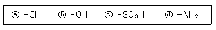
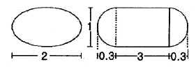
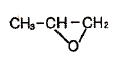
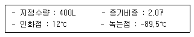

위험물산업기사 (2010-05-09 기출문제)
1과목: 일반화학
1. 98% H2SO4 50g 에서 H2SO4 에 포함된 산소 원자수는?
- 3×1023개
- 6×1023개
- 9×1023개
- 1.2×1024개
(정답률: 63%)

2. 다음 물질을 석출시키는데 필요한 전기량이 0.1F에 가장 가까운 것은? (단, 원자량은 Cu 63.5, Ag 108, Cl 35.5 이다.)
- 구리 3.18g
- 은 0.54g
- 산소 11.2L(0℃, 1기압)
- 염소 5.6L(0℃, 2기압)
(정답률: 62%)
3. 수소 1.2몰과 염소 2몰이 반응할 경우 생성되는 염화수소의 몰수는?
- 1.2
- 2
- 2.4
- 4.8
(정답률: 79%)
4. 다음 중 산성용액에서 색깔을 나타내지 않는 것은?
- 메틸오렌지
- 페놀프탈레인
- 메틸레드
- 티몰블루
(정답률: 84%)
5. 다음 중 물의 끓는점을 높이기 위한 방법으로 가장 타당한 것은?
- 순수한 물을 끓인다.
- 물을 저으면서 끓인다.
- 감압하에 끓인다.
- 밀폐된 그릇에서 끓인다.
(정답률: 84%)
6. 다음 물질에 대한 설명 중 틀린 것은?
- 물은 산소와 수소의 화합물이다.
- 산소와 수은은 단체이다.
- 염화나트륨은 염소와 나트륨의 혼합물이다.
- 산소와 오존은 동소체이다.
(정답률: 56%)
7. 반감기와 5일인 미지 사료가 2g 있을 때 10일이 경과하면 남은 양은 몇 g 인가?
- 2
- 1
- 0.5
- 0.25
(정답률: 80%)
8. 볼타 전지에 관한 설명으로 틀린 것은?
- 이온화 경향이 큰 쪽의 물질이 (-)극이다.
- (+)극에서는 방전시 산화 반응이 일어난다.
- 전자는 도선을 따라 (-)극에서 (+)극으로 이동한다.
- 전류의 방향은 전자의 이동 방향과 반대이다.
(정답률: 70%)
9. 염소원자의 최외각 전자수는 몇 개 인가?
- 1
- 2
- 7
- 8
(정답률: 87%)
10. 액체 공기에서 질소 등을 분리하여 산소를 얻는 방법은 다음 중 어떤 성질을 이용한 것인가?
- 용해도
- 비등점
- 색상
- 압축율
(정답률: 79%)
11. 다음 물질 중 -CONH- 의 결합을 하는 것은?
- 천연고무
- 니트로셀룰로오스
- 알부민
- 전분
(정답률: 54%)
12. 다음 중 극성 분자에 해당하는 것은?
- CO2
- CCl4
- CL2
- NH3
(정답률: 60%)
13. 다음 중 산성이 가장 약한 산은?
- HCL
- H2SO4
- H2CO3
- CH3COOH
(정답률: 36%)
14. 프로판 1kg을 완전 연소시키기 위해 표준상태의 산소가 약 몇 m3 이 필요한가?(오류 신고가 접수된 문제입니다. 반드시 정답과 해설을 확인하시기 바랍니다.)
- 2.55
- 5
- 7.55
- 10
(정답률: 58%)
15. 95% 황산의 비중 1.84 일 때 이 황산의 농도는 약 얼마인가? (단, S의 원자량은 32이다.)
- 17.8M
- 16.8M
- 15.8M
- 14.8M
(정답률: 59%)
16. 다음 보기의 벤젠 유도제 가운데 벤젠의 치환반응으로 부터 직접 유도 할 수 없는 것은?

- ⓐ, ⓑ
- ⓑ, ⓓ
- ⓐ, ⓒ
- ⓒ, ⓓ
(정답률: 60%)
17. 어떤 물질이 산소 50wt%, 황 50wt%로 구성되어 있다. 이 물질의 실험식을 옳게 나타낸 것은?
- SO
- SO2
- SO3
- SO4
(정답률: 83%)
18. 수성가스(water gas)의 주성분을 옳게 나타낸 것은?
- CO2, CH4
- CO, H2
- CO2, H2,O2
- H2, H2O
(정답률: 78%)
19. Fe(CN)64-와 4개의 K+ 이온으로 이루어진 물질 K4Fe(CN)6을 무엇이라고 하는가?
- 착화합물
- 할로겐화합물
- 유기혼합물
- 수소화합물
(정답률: 75%)
20. 페놀 수산기(-OH)의 특성에 대한 설명으로 옳은 것은?
- 수용액이 강 알칼리성이다.
- 2가 이상이 되면 물에 대한 용해도가 작아진다.
- 카르복실산과 반응하지 않는다.
- FeCl3 용액과 정색 반응을 한다.
(정답률: 77%)
2과목: 화재예방과 소화방법
21. 과산화나트륨과 혼재가 가능한 위험물은? (단, 지정수량 이상인 경우이다.)
- 에테르
- 마그네슘분
- 탄화칼슘
- 과염소산
(정답률: 75%)
22. 하론 1211 소화약제의 저장용기에 저장하는 소화약제의 양을 산출할 때는 「위험물의 종류에 대한 가스계 소화약제의 계수」를 고려해야 한다. 위험물의 종류가 이황화탄소인 경우 하론 1211에 해당하는 계수 값은 얼마인가?
- 1.0
- 1.6
- 2.2
- 4.2
(정답률: 37%)
23. 그림과 같은 타원형 위험물탱크의 내용적은 약 얼마인가? (단, 단위는 m 이다.)

- 5.03m3
- 7.52m3
- 9.03m3
- 19.⑤m3
(정답률: 70%)
24. 다음 위험물에 화재가 발생하였을 때 주수소화를 하면 수소가스가 발생하는 것은?
- 황화린
- 적린
- 마그네슘
- 황
(정답률: 77%)
25. Halon 1011 속에 함유되지 않은 원소는?
- H
- Cl
- Br
- F
(정답률: 73%)
26. 포 소화약제의 종류에 해당되지 않는 것은?
- 단백포소화약제
- 합성계면활성제포소화약제
- 수성막포소화약제
- 액표면포소화약제
(정답률: 65%)
27. 디에틸에테르 2000L와 아세톤 4000L를 옥내저장소에 저장하고 있다면 총 소요단위는 얼마인가?
- 5
- 6
- 7
- 8
(정답률: 61%)
28. 다음 중 분진 폭발을 일으킬 위험성이 가장 낮은 물질은?
- 알루미늄 분말
- 석탄
- 밀가루
- 시멘트 분말
(정답률: 76%)
29. 다음 중 자기연소를 하는 위험물은?
- 톨루엔
- 메틸알코올
- 디에틸에테르
- 니트로글리세린
(정답률: 70%)
30. 스프링클러설비에서 방사구역마다 제어밸브를 설치하고자 한다. 바닥면으로부터 높이 기준으로 옳은 것은?
- 0.8m 이상 1.5m 이하
- 1.0m 이상 1.5m 이하
- 0.5m 이상 0.8m 이하
- 1.5m 이상 1.8m 이하
(정답률: 76%)
31. 소화설비의 구분에서 물분무등소화설비에 속하는 것은?
- 포소화설비
- 옥내소화전설비
- 스프링클러설비
- 옥외소화전설비
(정답률: 64%)
32. 스프링클러헤드 부착장소의 평상시의 최고주위온도가 39℃ 이상 64℃ 미만 일 때 표시 온도의 범위로 옳은 것은?
- 58℃ 이상 79℃ 미만
- 79℃ 이상 121℃ 미만
- 121℃ 이상 162℃ 미만
- 162℃ 이상
(정답률: 79%)
33. 다음 중 무색, 무취이고 전기적으로도 비전도성이며 공기보다 약 1.5배 무거운 성질을 가지는 소화약제는?
- 분말소화약제
- 이산화탄소 소화약제
- 포소화약제
- 하론 1301 소화약제
(정답률: 82%)
34. 폭굉 유도거리(DID)가 짧아지는 요건에 해당되지 않은 것은?
- 정상 연소 속도가 큰 혼합가스일 경우
- 관속에 방해물이 없거나 관경이 큰 경우
- 압력이 높을 경우
- 점화원의 에너지가 클 경우
(정답률: 82%)
35. 강화액 소화기에 한냉지역 및 겨울철에도 얼지 않도록 첨가하는 물질은 무엇인가?
- 탄산칼륨
- 질소
- 사염화탄소
- 아세틸렌
(정답률: 73%)
36. 가연성 가스의 폭발 범위에 대한 일반적인 설명으로 틀린 것은?
- 가스의 온도가 높아지면 폭발 범위는 넓어진다.
- 폭발한계농도 이하에서 폭발성 혼합가스를 생성한다.
- 공기 중에서보다 산소 중에서 폭발 범위가 넓어진다.
- 가스압이 높아지면 하한값은 크게 변하지 않으나 상한값은 높아진다.
(정답률: 63%)
37. 탄산수소나트륨과 황산알루미늄 수용액의 화학반응으로 인해 생성되지 않는 것은?
- 황산나트륨
- 탄산수소알루미늄
- 수산화알루미늄
- 이산화탄소
(정답률: 49%)
38. 포소화설비의 가압송수 장치에서 압력수조의 압력 산출시 필요 없는 것은?
- 낙차의 환산 수두압
- 배관의 마찰손실 수두압
- 노즐선의 마찰손실 수두압
- 소방용 호스의 마찰손실 수두압
(정답률: 72%)
39. 제4류 위험물을 취급하는 제조소에 지정수량의 몇 배 이상을 취급할 경우 자체 소방대를 설치하여야 하는가?
- 1000배
- 2000배
- 3000배
- 4000배
(정답률: 76%)
40. 다음의 물품을 저장하는 창고에 이산화탄소 소화설비를 설치하고자 한다. 가장 부적합한 경우는?
- 톨루엔
- 동식물유류
- 고형 알코올
- 과산화나트륨
(정답률: 65%)
3과목: 위험물의 성질과 취급
41. 다음 중 니트로기(-NO2)를 1개만 가지고 있는 것은?
- 니트로셀룰로우스
- 니트로글리세린
- 니트로벤젠
- TNT
(정답률: 68%)
42. 다음 위험물 중 인화점이 약 -37℃ 인 물질로서 구리, 은, 마그네슘 등의 급속과 접촉하면 폭발설 물질인 아세틸라이드를 생성하는 것은?

- C2H5OC2H5
- CS2
- C6H6
(정답률: 67%)
43. 다음 중 저장할 때 상부에 물을 덮어서 저장하는 것은?
- 디에틸에테르
- 아세트알데히드
- 산화프로필렌
- 이황화탄소
(정답률: 78%)
44. 탄화칼슘과 물이 반응하였을 때 생성되는 가스는?
- C2H2
- C2H4
- C2H6
- CH4
(정답률: 67%)
45. 제1석유류, 제2석유류, 제3석유류를 구분하는 주요 기준이 되는 것은?
- 인화점
- 발화점
- 비등점
- 비중
(정답률: 76%)
46. 금속나트륨에 대한 설명으로 틀린 것은?
- 제3류 위험물이다.
- 융점은 약 297℃ 이다.
- 은백색의 가벼운 금속이다.
- 물과 반응하여 수소를 발생한다.
(정답률: 65%)
47. 황화린에 대한 설명 중 잘못된 것은?
- P4S3 는 황색 결정 덩어리로 조해성이 있고, 공기 중 약 50℃ 에서 발화한다.
- P2S5 는 담황색 결정으로 조해성이 있고, 알칼리와 분해하여 가연성 가스를 발생한다.
- P4S7 담황색 결정으로 조해성이 있고, 온수에 녹아 유독한 H2S를 발생한다.
- P4S3 과 P2S5 의 연소생성물은 모두 P2O5 와 SO2 이다.
(정답률: 48%)
48. 위험물의 적재 방법에 관한 기준으로 틀린 것은?
- 위험물은 규정에 의한 바에 따라 재해를 발생시킬 우려가 있는 물품과 함께 적재하지 아니하여야 한다.
- 적재하는 위험물의 성질에 따라 일광의 직사 또는 빗물의 침투를 방지하기 위하여 유효하게 피복하는 등 규정에서 정하는 기준에 따른 조치를 하여야 한다.
- 운반용기는 수납구를 옆으로 향하게 하여 나란히 적재한다.
- 위험물을 수압한 운반용기가 전도ㆍ낙하 또는 파손되지 아니하도록 적재하여야 한다.
(정답률: 87%)
49. 질산과 과염소산의 공통적인 성질에 대한 설명 중 틀린 것은?
- 가연성 물질이다.
- 산화제이다.
- 무기화합물이다.
- 산소를 함유하고 있다.
(정답률: 56%)
50. 다음은 어떤 위험물에 대한 내용인가?

- 메탄올
- 에탄올
- 이소프로필알코올
- 부틸알코올
(정답률: 63%)
51. 메틸에틸케톤의 저장 또는 취급시 유의할 점으로 가장 거리가 먼 것은?
- 통풍을 잘 시킬것
- 찬곳에 저장할 것
- 일광의 직사를 피할 것
- 저장 용기에는 증기 배출을 위해 구멍을 설치할 것
(정답률: 80%)
52. 다음 중에서 제2석유류에 속하지 않는 것은?
- 등유
- CH3COOH
- CH3CHO
- 경유
(정답률: 59%)
53. 제4류 위험물의 저장ㆍ취급시 주의사항으로 틀린 것은?
- 화기 접촉을 금한다.
- 증기의 누설을 피한다.
- 냉암소에 저장한다.
- 정전기 축적 설비를 한다.
(정답률: 72%)
54. 다음 중 제5류 위험물에 해당하지 않는 것은?
- 니트로글리콜
- 니트로글리세린
- 트리니트로톨루엔
- 니트로톨루엔
(정답률: 49%)
55. 칼륨과 물이 반응할 때 생성되는 것은 무엇인가?
- 수산화칼륨, 산소
- 수산화칼륨, 수소
- 산소, 수소
- 산화칼륨, 산소
(정답률: 75%)
56. 제3류 위험물 중 금수성물질 위험물제조소에는 어떤 주의사항을 표시한 게시판을 설치하여야 하는가?
- 물기엄금
- 물기주의
- 화기엄금
- 화기주의
(정답률: 79%)
57. 지정수량의 10배를 초과하는 위험물을 취급하는 제조소에 확보하여야 하는 보유공지의 너비는?
- 1m 이상
- 3m 이상
- 5m 이상
- 7m 이상
(정답률: 79%)
58. 다음 위험물 중 물속에 저장해야 안전한 것은?
- 황린
- 적린
- 루비듐
- 오황화린
(정답률: 80%)
59. 다음 중 지정수량을 틀리게 나타낸 것은?
- 중크롬산염류 - 500kg
- 제2석유류(비수용성) - 1000L
- 히드록실아민염류 - 100kg
- 재4석유류 - 6000L
(정답률: 62%)
60. 1기압 27℃ 에서 아세톤 58g을 완전히 기화시키면 부피는 약 몇 L가 되는가?
- 22.4
- 24.6
- 27.4
- 58.0
(정답률: 64%)
98% H2SO4 50g에서 H2SO4의 몰 질량은 98g/mol입니다. 따라서 50g의 H2SO4는 50/98 몰, 즉 0.51 몰입니다.
0.51 몰의 H2SO4에 포함된 산소 원자수는 0.51 몰 × 6.02 × 1023 분자/몰 × 4 원자/분자 = 1.22 × 1024개입니다. 따라서 정답은 "1.2×1024개"입니다.